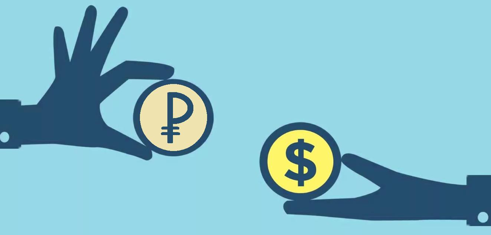
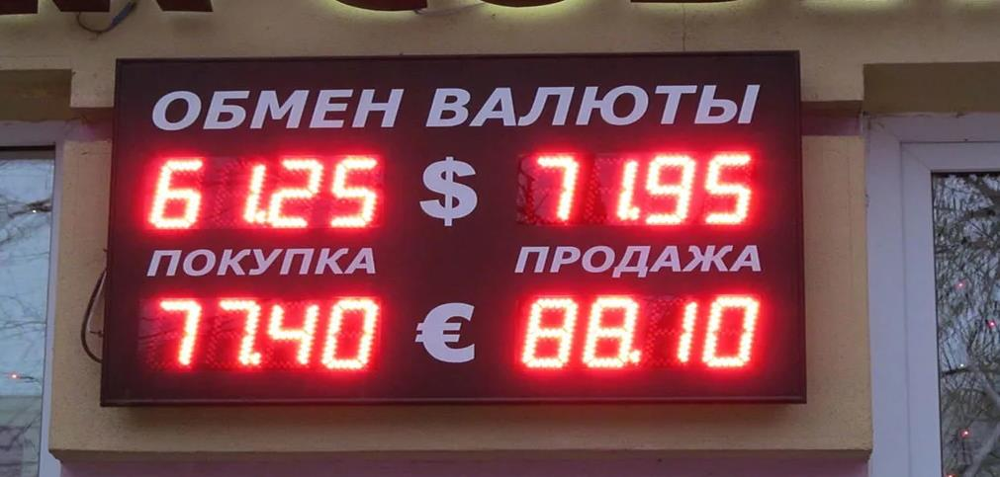
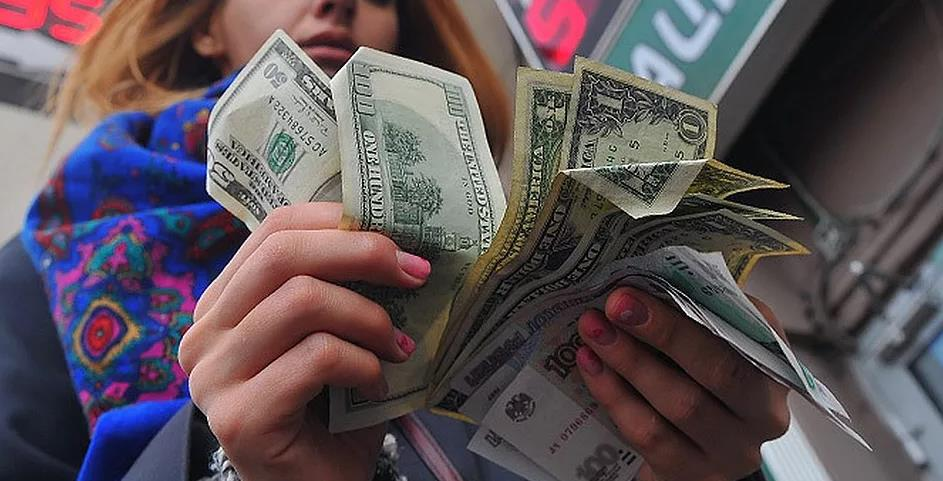
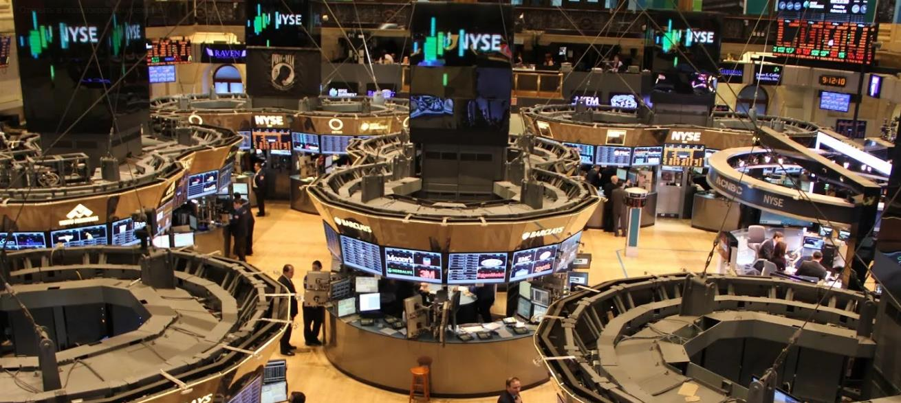

Чтобы понять, что такое Forex, нужно сначала разобраться с валютами и возможными операциями с ними. Как
всем хорошо известно, в каждой стране есть своя валюта. В силу тех или иных причин мы иногда идём в
обменник и покупаем евро, потому как в скором времени планируется поездка, например на Чемпионат Европы
по футболу. Рублями там не расплатиться, поэтому нужно заранее взять с собой деньги, которые находятся в
обороте на этой территории. Сейчас практически в любом банке есть обменный пункт, где нам
предоставляется возможность купить доллары или евро, а иногда и больший перечень валют. Наиболее
предусмотрительные граждане ищут такой обменник, который даст наилучший курс.
И здесь всё логично – зачем получать за 7000 рублей 105 долларов, если можно пройти чуть дальше и уже в
другом обменном пункте получить 107 долларов. На первый взгляд может показаться, что разница
несущественная, и, возможно, так оно и есть, но не для всех. И если представить, что это уже не 7000
рублей меняется, а все 70 000, то экономия может быть 20 долларов. Так мы подходим к первой важной мысли
– нам готовы обменять деньги на иностранную валюту, причём есть множество предложений и разумным
вариантом будет выбрать самое выгодное из них. Это примерно такая же модель, как на овощном рынке – у
одного продавца помидоры стоят 100 рублей за килограмм, при этом зеленоватые, пахнут пластиком, а у
соседнего продавца гораздо более симпатичные и всего за 90 рублей килограмм. Доллары, хоть и зелёные, но
не помидоры, качества примерно одинакового, а вот цена может отличаться.
Итак, выше мы рассмотрели самый примитивный пример взаимодействия человека с продажей или покупкой
валюты. Сам по себе рынок, на котором осуществляется этот обмен, называется форекс. Это слово образовано
от двух других, взятых из английского языка – foreign, что означает зарубежный, иностранный, а также
exchange, что, в свою очередь, имеет значение обмена. Таким образом, общий смысл что такое форекс
становится понятен – обмен зарубежных денег. Это общее название всего огромного валютного рынка, который
включает в себя и вот такие мелкие обменные операции в кассе банка. И эти операции можно назвать самым
первым и маленьким звеном во всей система обмена денег.

Участники валютного рынка
Это был пример наличного расчёта на форекс, когда отдавали рубли и получали бумажные доллары или евро.
Но в нынешний век развития цифровой индустрии всё больше и больше людей переходят на безналичный расчёт,
хранят свои сбережения на депозите, а деньги “на жизнь” берут с карточки, куда приходит зарплата. Когда
открывается счёт в банке, обычно сотрудники в достаточно назойливой форме предлагают также открыть счета
в евро и в долларах, иногда даже бесплатно в довесок к основному. Имея такой счёт, можно запросто через
мобильный банкинг перевести деньги со своего рублёвого счёта на долларовый. Это тот же механизм, что и в
случае с кассой, но только теперь даже выходить на улицу не надо – всё сделали в электронном виде.
Быстро, удобно, да ещё и обменный курс в такой ситуации оказывается зачастую гораздо лучше того, что
предлагают в отделении. Далее ещё один пример того, что такое forex.
Теперь мы знаем, что можно менять как деньги в наличном виде, так и в безналичном, нужно всего лишь
обратиться в банк или обменник. Простой гражданин, который летает в отпуск раз в год и иногда пополняет
свой валютный счёт в банке, является участником валютных торгов, даже не подозревая об этом. Просто
нужно взглянуть на это с другой стороны – например, такой человек потратил в отпуске 300- 500 долларов,
которые он перед этим купил. Если мы возьмём среднее количество туристов, которые каждый год улетают за
границу и тратят там доллары, то совокупная сумма составит уже несколько миллиардов долларов. То есть по
факту это ежегодный спрос на доллары, которые необходимы для отдыха, и выражается он вот в таком
немаленьком объёме. А теперь попробуем представить себе, что и в нашу страну также въезжает колоссальное
количество туристов, которые хотят купить рубль – никто на кассе в магазине не примет доллару к оплате
бутылки с минеральной водой.
В итоге получаем очень сложную систему, где есть огромное количество участников со своими разными
интересами. А к ней ещё добавляется фактор сезонности – за границу летят зимой, а туристы в Россию
стремятся, наоборот, летом. Далее можно добавить разного рода праздники, спортивные мероприятия и так
далее, что даёт просто бесчисленное количество факторов, влияющих на то, как активно покупается
какая-либо валюта
Но это всё мелочи по сравнению с корпоративной деятельностью и торговыми отношениями с другими странами.
К примеру, есть компания, которая занимается металлообработкой и продаёт готовые материалы за границу,
получая оплату в евро. К тому моменту, когда надо подавать бухгалтерский отчёт и платить налоги, такая
фирма вынуждена полученную в евро прибыль конвертировать в рубли, чтобы всё было в соответствии с
законодательством. Каждая страна имеет какой-либо экспорт и импорт, что создаёт повсеместную
необходимость периодически обменивать одни деньги на другие, все операции проводятся на forex – продаём
или покупаем одни деньги за другие.

Итак, у нас уже есть две большие группы участников форекс – простые жители, оперирующие небольшими
суммами в практических целях и юридические лица, работающие с иностранцами и вынужденные проводить
определённые валютные операции. Возможно, многие из них и не знают, что такое форекс, но являются
невольными участниками этого рынка. И подобно тому, как на обычном рынке, если есть высокий спрос на
какой-либо товар, то цена на него растёт, так происходит и здесь. Если все будут хотеть купить доллар,
но будет мало тех, кто покупает рубль, то доллар начнёт дорожать. То есть у нас получается классическая
схема – есть продавцы, есть покупатели, все они объединяются в рамках торговли валютой – ещё один пример
того, что такое форекс, для чего он нужен и как он касается всех нас.
Вышеперечисленные категории можно назвать “участники по неволе”. Теперь рассмотрим тех, кто осознанно и
без какой-либо необходимости покупает и продаёт валюту. Это люди или организации, которые хотят
заработать на том, как вследствие определённых обстоятельств одна валюта дорожает относительно другой.
Самый яркий тому пример – кризисная ситуация в экономике. Если вспомнить 2008 год, когда о проблемах не
говорил только ленивый. В ситуации неопределённости граждане хотят как минимум сохранить свой капитал,
они видят, что доллар стал стремительно дорожать по отношению к рублю. А это неминуемо вызывает рост
стоимости всех зарубежных товаров (ещё более яркий пример – 1998 год, когда прилавки магазинов попросту
пустели из-за того, что народ хотел максимально быстро вложить деньги хотя бы во что-то).
То есть автомобиль Ford, произведённый в Соединённых Штатах, как стоил 15 000 долларов, так и будет
дальше стоить всё те же 15 000 долларов, здесь простая арифметика себестоимости производства и интереса
продавца, которому всё равно, что происходит в какой-то стране, ведь были потрачены деньги и продавать
дешевле не выгодно. Но в рублях это уже может стать не пятьсот тысяч, а миллион. При этом большая часть
населения получает зарплату в рублях, работодателю также всё равно, что происходит с курсом. Всё это
приводит к тому, что люди идут в обменники и начинают менять рубли на доллары и евро в надежде сохранить
свои сбережения. Так мы получаем ещё одну категорию участников форекс – желающие не потерять.

Теперь переходим к самому важному – участникам валютного рынка, которые хотят заработать на изменении
курса. На протяжении последних пятнадцати лет можно выделить периоды, когда рубль находился на
стабильных отметках, то есть доллар стоил около 30 рублей и немного колебался, то чуть дороже, то чуть
дешевле. После этого начался ипотечный кризис в США и долгий период спада в мировой экономике. На
форексе это вылилось в то, что курс доллара стал постоянно меняться. Включая простую логику, можно
сделать очень нехитрый вывод – а почему бы не купить доллары по 33 рубля и не продать по 35? Получится
заработать, общая сумма в рублях станет больше. Потом подождать немного и снова купить доллары по 33, а
если получится, то и по 32, подержать их и потом опять продать подороже. Этот упрощённый вариант даёт
понимание о том, какова логика спекулянтов, зарабатывающих на изменении курсов валют.
Если есть такие участники рынка, то логично предположить, что есть и целые организации, которые ставят
своей целью получение прибыли на торговли вот таких разниц в цене. Эту категорию представляют банки,
инвестиционные фонды, управляющие компании и так далее. Они вкладывают огромные деньги, иногда
конкурируя между собой и создавая движения в валютах. Наверное, все слышали про Джорджа Сороса,
заработавшего колоссальную сумму денег на обвале английской валюты. А теперь представим, что на рынке
форекс работают десятки, сотни таких Соросов, каждый из которых хочет обогатиться. В этот момент у
простого обывателя должно измениться понимание того, что такое forex, это не абстрактное явление, а
вполне конкретный пример того, как люди зарабатывают деньги по сути из воздуха, это высококонкурентная
среда, где каждый хочет урвать свой кусок. Конечным звеном на форекс являются банки, которые оперируют
уже сотнями миллионов долларов между собой.
История и масштабы форекс
Перейдём к цифрам. По разным оценкам менее 5% общего объёма валют покупаются и продаются с практической
целью, то есть по тем причинам, которые мы описывали в самом начале. Остальные 95% относятся к торговле
на форекс с целью заработка. Удаётся это, конечно, не всем, ведь все в плюсе быть не могут по
определению. Форекс – замкнутая система, где один зарабатывает, а другой теряет. Если вы купили доллар
по 33, а он стал по 32, расстраиваться, наверное, не станете, а просто отложите их “до лучших времён”.
Но если вы собираетесь купить их на несколько миллионов рублей, то будете очень внимательно оценивать
перспективы, вам вдруг станет очень интересны такие вещи, как показатели экономики страны, политика
центрального банка и так далее. Обладая знаниями, на форекс можно очень неплохо зарабатывать, ведь тут
всё однозначно – либо цена движется вверх, либо вниз. Кстати, именно по этой причине форекс часто
сравнивают с рулеткой и другими азартными играми, но делают такие заявления обычно неосведомленные люди,
фундаментально не понимающие природы рынка.

Ещё пятьдесят лет назад мало кто знал, что такое форекс. В основном велась торговля акциями, сырьём,
товарами. Но после того, как американский доллар был отвязан от золота, то есть стал простой бумажкой,
началось бурное развитие форекс. Оборот за сутки стремительно рос и на данный момент он на порядки
больше, чем таковой в других секторах биржи. Этому способствует как налаживание тесных экономических
связей между странами в рамках общемировой глобализации, так и желание зарабатывать, в том числе на
изменении курса одной валюты к другой. Развитие информационных технологий позволяет сейчас стать
участником форекс не выходя из дома – получить доступ к торгам можно буквально за двадцать минут после
простой регистрации. Так люди становятся трейдерами – профессиональными участниками рынка, в нашем
случае forex.
Подводя итог, можно сказать, что с одной стороны вся структура и участники, описанные выше, довольно
проста и понятна, но с другой стороны сам рынок очень и очень сложный механизм, в котором надо
разбираться, чтобы достичь успеха. Forex – это не лохотрон, а серьёзная часть мировой экономики, в
которой представлены как практическая сторона, так и спекулятивная. В первом случае это часть работы
организации или же стремление далёкого от биржи человека не потерять деньги, во втором – сознательные
действия постоянного характера, направленные на получение прибыли.
ПРОСТОЕ И БЫСТРОЕ СОЗДАНИЕ АККАУНТА
Для создания действующей учетной записи на сайте требуется всего лишь 2 минуты. Следует поспешить
открыть аккаунт, чтобы уже сейчас получить максимум привелегий от партнерства с компанией
NAME_OF_COMPANY: бонусная система, высокая степень защиты клиентских
средств, а также разнообразные способы переводов по депозитным счетам.
 Telegram
Telegram Эл.Почта
Эл.Почта